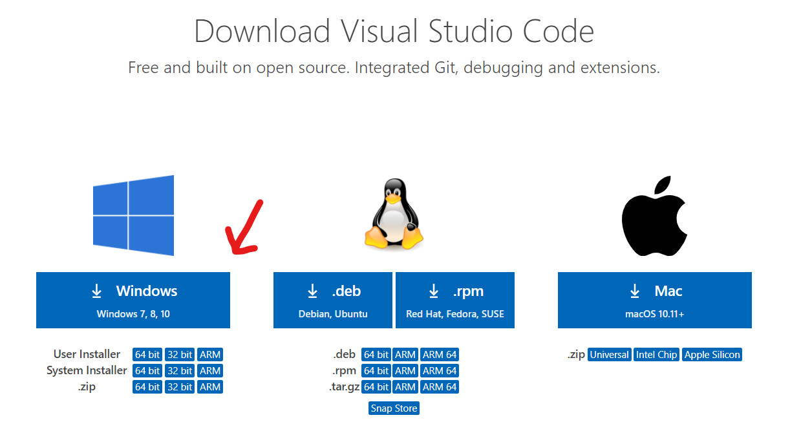
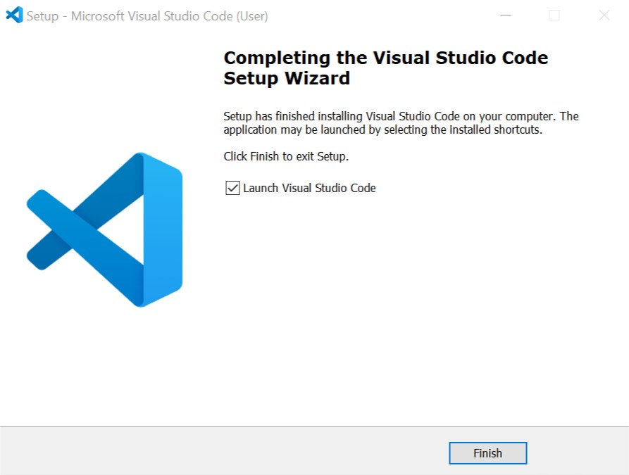
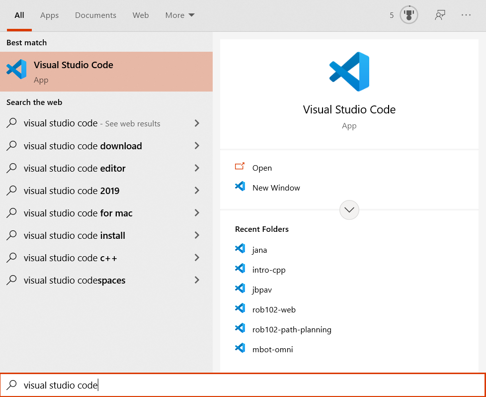
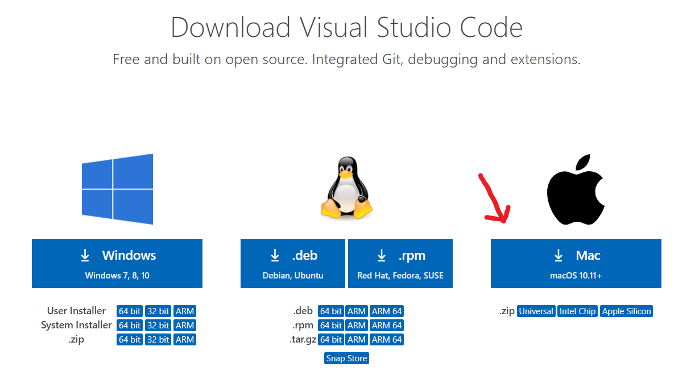
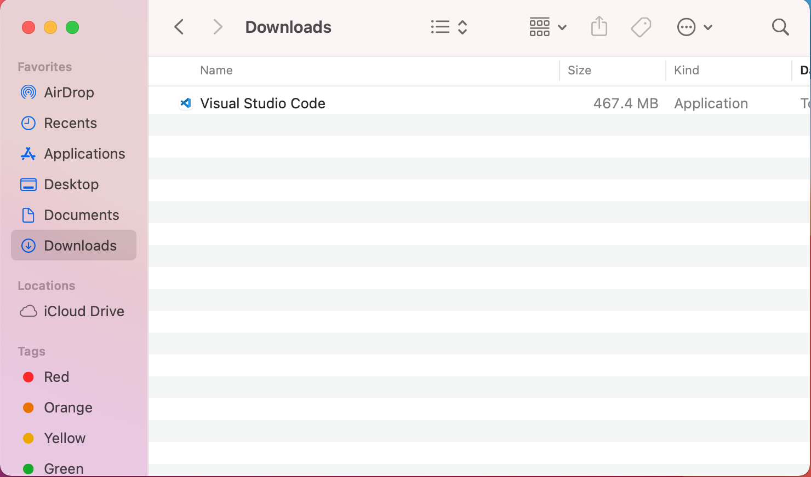
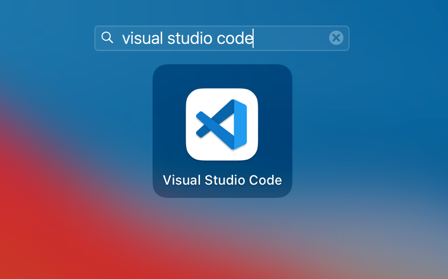
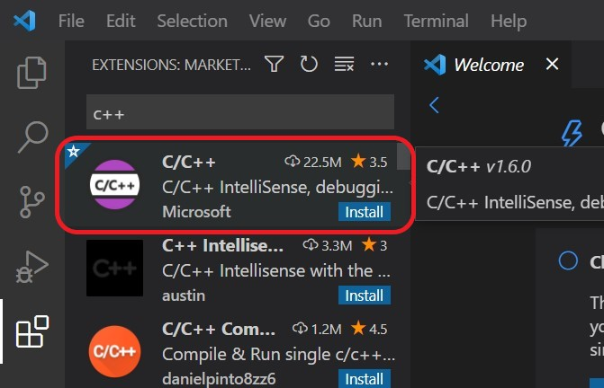

This page contains instructions for installing software needed for ROB 102.
- VSCode
Install VSCode
Visual Studio Code is the Integrated Development Environment (IDE) that we will be using to write C++ code. To install it, follow the instructions for your OS. Then, configure it following the configuration instructions.
Note: There is another IDE called Visual Studio. VSCode is different from Visual Studio.
Installing VSCode
Windows
- Download VSCode: Download the installer for VSCode for Windows from the Visual Studio website:

- Install VSCode: When the installer finishes downloading, click on it to run it. Click "Yes" when asked to allow the installer to make changes to your computer. Accept the default option for the installation path. If installation is successful, you should see a screen like this one:

- Open VSCode: Open VSCode by searching for "Visual Studio Code" in the search bar:

MacOS
- Download VSCode: Download the installer for VSCode for Mac from the Visual Studio website:

- Add VSCode to applications: When the installer finishes downloading, find the download using your Finder (look for it in Downloads). Drag and drop the file into your Applications folder.

- Open VSCode: Open VSCode by searching for "Visual Studio Code" in the launchpad:

Linux
Download the installer for VSCode for Linux from the Visual Studio website and follow the instructions to install.
Configuring VSCode
There are multiple extensions available to configure VSCode to your needs. We recommend installing the C/C++ extension for ROB 102. Later, you might discover more extensions that you find useful. To install an extension, select the "Extensions" icon  in the bar on the left of the VSCode window. In the search bar, type "C++" and select "Install" for the extension shown below:
in the bar on the left of the VSCode window. In the search bar, type "C++" and select "Install" for the extension shown below:
